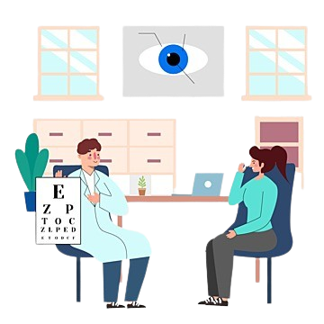

Layanan Kami

Konsultasi Kesehatan
Diskusi langsung dengan tenaga profesional tentang kesehatan Anda.

Perawatan & Pengobatan
Pelayanan medis dan pengobatan untuk berbagai kebutuhan kesehatan.
Pemeriksaan Rutin
Cek kesehatan secara rutin untuk mendeteksi dini masalah kesehatan.